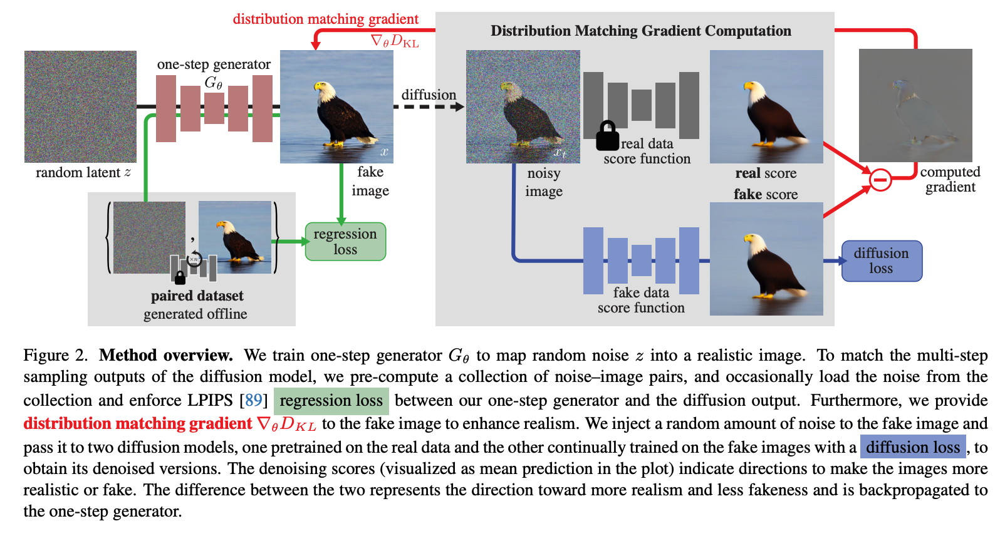
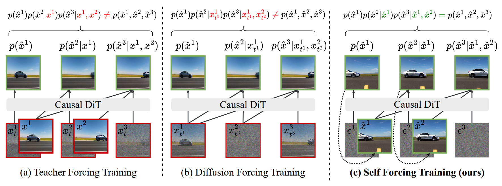
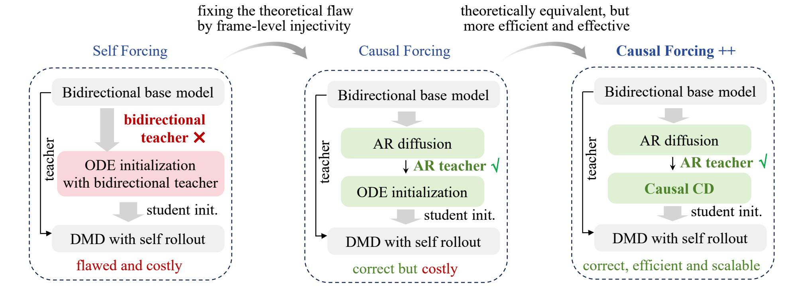

Score Matching → DMD → Self Forcing → Causal Forcing
沿着一个问题往下走：怎样学到分布、怎样从中采样、怎样采得更快，以及怎样逐段生成视频而不在训练和推理之间脱节？
根据 Daniel Yu 的《World modelling jc》PPT 整理。第 14、16、18–19 页讲者备注提供 score 到 diffusion 的叙述，第 23–25 页图片提供 DMD 与 forcing 的公式和流程。后半段解释结合原论文补充，文末列出来源。
先找回当时的逻辑链
想让生成分布接近数据分布 → 从 KL / likelihood 理解生成建模。
直接建概率有归一化难题 → energy model 引入配分函数；对输入求 log 梯度后，配分函数消失，得到 score。
只在数据附近学 score，远处方向不可靠 → 加噪把分布铺开；大噪声提供全局方向，小噪声恢复细节；逐层退火，再推广到连续时间 diffusion。
逐步去噪太慢 → DMD 用两个分布的 score 差，训练少步生成器做分布匹配。
视频要边生成边交互 → 改成 causal / AR；训练时也吃自己的历史，形成 Self Forcing。
自 rollout 解决不了错误的初始化目标 → Causal Forcing 先得到 AR teacher，再做因果蒸馏，最后接 self-rollout DMD。
这是一条理解路线。Score matching 是学习目标，DMD 是蒸馏方法，Self Forcing 是训练时的 rollout 方式，Causal Forcing 是一套蒸馏流程；它们处在不同层次，可以组合使用。
先有分布匹配，再有具体的学习方法
设真实数据分布为 \(p_{\mathrm{data}}\)，模型分布为 \(p_\theta\)。一个起点是最小化 forward KL：
第一项与模型参数无关，所以优化它等价于最大化数据的 log likelihood。“匹配分布”是目标，maximum likelihood 是实现目标的一条路。GAN 等方法也可以从分布匹配理解，但所用的距离和训练机制不同。
为什么引入 energy model？
指数保证非负，\(Z\) 保证积分为 1。你在 PPT 里用“不能随便提出一个恒为 1 的函数”强调的就是：概率必须归一化，不能把所有样本的概率同时无约束地抬高。连续空间中密度也不要求逐点小于 1。
下一问：高维积分算不出，能否只借助局部方向来采样？
Score 给出当前位置的 log 密度上升方向
\(Z(\theta)\) 与输入 \(x\) 无关，因而在这个梯度中消失。注意对输入求导与对参数求导的区别：这并不意味着 energy model 的 likelihood 训练也自动绕过了配分函数。
有了 score，可以用 Langevin dynamics 采样。以下采用步长 \(\eta\) 的一种约定：
第一项沿高密度方向走，随机项让过程探索分布。在适当条件与足够小步长下，它近似从目标分布采样。只沿梯度爬到峰值，是优化；保留合适的噪声项，才有这里的分布采样含义。
Score matching：学这个场
真实 score 不可直接获得。分部积分可把目标改写成包含 \(\nabla_x\!\cdot s_\theta(x)\) 的形式，但高维 trace 计算有成本。PPT 第 8–12 页从这里引出 denoising score matching。
展开：加噪后，为什么有了可计算的监督？
令 \(x_t=\alpha_t x_0+\sigma_t\epsilon\)，其中 \(x_0\sim p_{\mathrm{data}}\)、\(\epsilon\sim\mathcal N(0,I)\)，且 \(\sigma_t>0\)。我们知道条件分布的 score：
平方误差的最优预测是条件期望，因此：
可计算的是“给定干净样本的高斯条件 score”，最终学到的是“加噪后的边缘分布 score”。加噪后的整体分布一般仍是复杂混合分布。
小噪声保细节，大噪声让远处也有方向
你在第 14 页的台词抓住了核心：score matching 的期望按数据密度加权，样本集中在高密度区域，低密度区域缺乏约束。从随机初值出发时，恰好容易落在这些方向不可靠的位置。
第 15 页加大噪声，让不同模态之间的区域也得到覆盖，方向更容易估计；代价是分布被抹平，细节丢失。因此第 16 页用退火 Langevin：先在大噪声分布采样，再把结果作为下一档较小噪声的初值，逐档回到数据附近。
大噪声分布中找整体位置 → 把样本交给较小噪声层 → 逐步恢复细节。
第 17 页的转折是“若有无数层这样的噪声呢？”连续时间模型用 \(s_\theta(x,t)\) 表示每个时间的 score。对于前向 SDE：
对应的反向 SDE 为：
这里 \(dt<0\)；数值噪声尺度使用 \(\sqrt{|dt|}\)。退火 Langevin 提供多噪声层的直觉，反向 SDE 则由指定的前向过程推导，二者不应直接当作同一个更新公式。
DDPM、score 与 flow 的位置
在同一高斯扰动路径下，噪声预测与 score 可通过 \(s_\theta=-\epsilon_\theta/\sigma_t\) 转换。相应 probability-flow ODE 的速度是 \(f-\tfrac12g^2s_\theta\)。Flow matching 直接学习选定概率路径的速度场。具体等价关系依赖路径、参数化和损失权重。
下一问：现在能生成了，但每次都要走很多步，能否把采样压缩成一步或几步？
DMD：用两个 score 的差训练快速生成器
第 23 页再次回到分布匹配。设 \(x_0=G_\theta(z)\)，\(z\sim\mathcal N(0,I)\)，其输出分布为 \(p_{\mathrm{fake}}\)，目标分布为 \(p_{\mathrm{real}}\)。这次 KL 的方向与最初的 maximum likelihood 不同：
在所需正则条件下，对生成器参数的梯度可以写为：
这里 \(J_{G_\theta}=\partial G_\theta/\partial\theta\)。梯度下降给样本的局部推动方向是 \(s_{\mathrm{real}}-s_{\mathrm{fake}}\)：借助目标分布的方向，同时校正生成分布自身的密度。只保留 real score 就改变了目标，不能当成完整的 DMD。

为什么训练时仍然要加噪？
沿用前面的多噪声 score 思路，将生成样本变为 \(x_t=\alpha_tG_\theta(z)+\sigma_t\epsilon\)，在不同噪声层比较两个分布。第 23 页的实用更新形式是：
这是噪声层分布匹配的加权更新，不应不加说明地等同于干净分布 KL 的精确梯度。目标 teacher 提供 real score；另一个在线去噪模型拟合当前生成样本的 fake score；生成器沿 score 差更新。生成器变化后，fake-score 模型也要跟上。
公式与图据 PPT 第 23 页；核对：DMD 原论文。
下一问：少步生成已经很快，但交互视频还需要“先出一段，再接着出下一段”。
Self Forcing：训练时也让模型接着自己的输出生成
视频有两个时间轴：视频轴决定按帧或 chunk 依次生成，去噪轴决定每个 chunk 内从噪声走多少步。AR 解决前者，少步蒸馏解决后者。
\(c\) 是文本等条件，\(x^i\) 可以是一帧或一个 chunk。关键是训练里的历史 \(x^{<i}\) 从哪里来。
| 方式 | 训练时的历史 | 需要记住的差别 |
|---|---|---|
| Teacher Forcing | 干净的数据历史 | 训练见到正确历史，推理见到自己生成的历史。 |
| Diffusion Forcing | 对数据各帧独立采样噪声等级 | 覆盖多种噪声状态，但被扰动的数据历史与模型自己的错误仍有差别。 |
| Self Forcing | 模型逐段生成的历史 | 训练时就走推理用的 AR rollout，对最终视频做分布匹配。 |

Self Forcing 把 exposure bias 的问题放到训练里处理：模型先生成第一段，缓存历史，再接着生成后续段；对这条真实 rollout 的输出施加 DMD 等视频级分布损失。Few-step 模型、KV cache 与梯度截断让训练成本可控。
Self Forcing 决定“拿什么历史来生成”；DMD 决定“怎样评价并更新生成分布”。Self Forcing 也可搭配其他分布损失，二者不是同义词。训练长度之外的长期漂移仍可能存在。
对照：Self Forcing 原论文。
下一问：rollout 对齐了，但少步 AR 模型最开始的 ODE 蒸馏，监督目标是否符合它能看到的信息？
Causal Forcing：先让蒸馏 teacher 的信息范围符合因果约束
第 25 页把问题推进到初始化：双向 teacher 能用未来噪声帧决定当前帧的 ODE 终点，AR student 看不到未来。固定学生可见输入，改变未来仍可能改变监督目标。此时逐样本 MSE 的最优解会成为条件均值，出现平均化。
展开：为什么“整段 ODE 可逆”还不够？
在适当正则条件下，完整视频的 PF-ODE 流映射可以是一一对应的。但投影到学生只看得见的当前帧与历史后，唯一性未必保留。用 \(u\) 表示学生可见输入、\(v\) 表示缺失的未来信息，监督目标为 \(y=F(u,v)\)。若同一个 \(u\) 对应多个 \(y\)，则：
例如相同可见输入对应 teacher 的两个终点 \(-1\) 与 \(+1\)，且概率相同，确定性 MSE 预测会给出 \(0\)。这说明的是丢失 teacher 信息后拟合特定轨迹的问题，不表示 AR 模型不能表示多模态分布。

1. Teacher-forcing AR diffusion：从双向预训练模型适配出多步 AR teacher。
2. Causal ODE distillation：在相同干净历史条件下，用 AR teacher 生成轨迹，训练少步 AR student。图中的 causal CD 是另一条蒸馏分支。
3. Asymmetric DMD + self rollout：在学生自己生成的历史上优化视频分布。
因果 teacher 的要求针对中间的轨迹蒸馏阶段；最终分布监督仍可使用双向 real-score teacher。“Asymmetric”保留了这种架构差异。它不要求所有训练阶段的模型一律改成 causal。
解释据 PPT 第 25 页及 Causal Forcing 原论文。这里的因果性指时间信息访问约束，不等同于因果推断。
保留直觉，同时修正讲稿中的几处简写
- KL 与交叉熵相差数据熵。它们对模型参数的优化等价，数值通常不相等。
- Score matching 的目标有平方范数。PPT 第 8–9 页的差值表达是速记，不能直接作为完整 loss。
- Langevin 采样不等于寻找最大 likelihood 的单个样本。噪声项承担分布探索的作用。
- 高斯加噪不会把整个数据分布变成单个高斯。变得可解析的是给定样本的扰动核。
- 噪声 schedule 的条件取决于路径。DDPM 常见的是 \(\alpha_t^2+\sigma_t^2=1\)；线性 flow 插值可用 \(\alpha_t=1-t,\sigma_t=t\)。不要混用。
- AR 视频生成提供 world model 的生成机制。闭环控制还需动作条件、环境接口与任务评估，单靠这套蒸馏并不保证长期物理一致性。
下次只需先想起这四句
Score Matching：学分布的局部方向，多噪声层把方向接成从噪声到数据的采样过程。
DMD：用 real / fake score 差训练快速生成器，把匹配对象放在输出分布上。
Self Forcing：训练时也接着自己生成的历史往下走，对推理实际产生的视频分布施加监督。
Causal Forcing：先修正 AR student 的轨迹蒸馏 teacher，再接 Self Forcing 式的分布优化。
自测：我真的找回这条链了吗？
- 为什么 score 不需要知道配分函数？
对输入求 log 梯度时，与输入无关的归一化项消失。 - 为什么只有小噪声不够？
随机初值可能落在低密度、score 约束不足的区域。 - 为什么 DMD 要 fake score？
KL 梯度需要目标分布与当前生成分布的 score 差。 - 为什么给历史加噪还不等于 Self Forcing？
扰动数据不等于让模型经历自己 rollout 产生的历史。 - 为什么已经 Self Forcing 还需要 Causal Forcing？
rollout 对齐与初始化时 teacher / student 的信息对齐是两个问题。